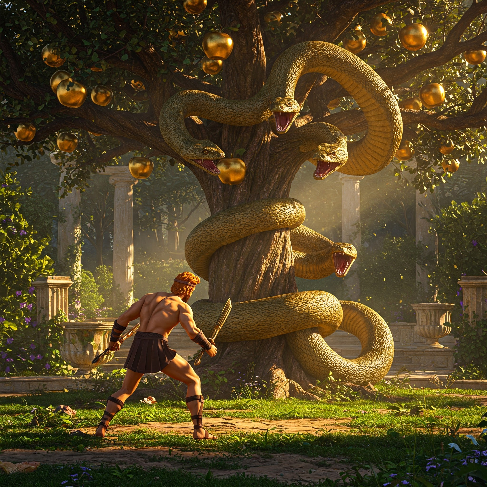

El océano Occidental arde en llamas al atardecer. Tras navegar por aguas donde las estrellas se hunden en el mar, llegas a un acantilado de cristal negro. En su cima, un jardín prohibido: árboles de hojas de plata, flores que cantan en coro... y el Dragón Ladón, enrollado alrededor del Árbol de la Vida, sus cien cabezas vigilando cada manzana dorada.
Las Hespérides, ninfas vestidas de crepúsculo, te observan desde las sombras:
"No puedes tomarlas... pero quizá ganarlas"— susurra Egle, la más joven, mientras frota una manzana contra su pecho.
¿Qué harás?
